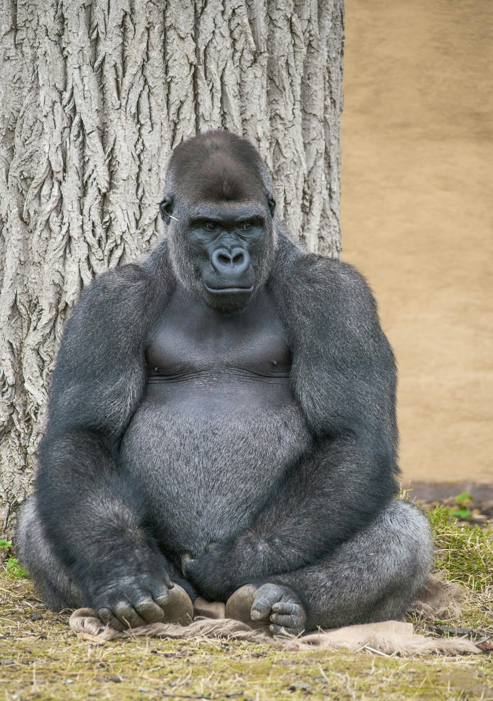

Pantera

Pantera to zwinny drapieżnik o cętkowanym futrze i potężnych szczękach. Prowadzi nocny tryb życia i porusza się niemal bezszelestnie.
Lew

Lew to majestatyczny drapieżnik, nazywany królem zwierząt. Żyje w stadach i znany jest z donośnego ryku oraz imponującej grzywy samców.
Goryl
Tu wstaw opis goryla
Goryle to największe naczelne, które żyją w grupach rodzinnych i porozumiewają się za pomocą gestów oraz dźwięków. Spędzają większość dnia na żerowaniu i odpoczynku w cieniu drzew.
Tapir

Tapir to roślinożerny ssak o charakterystycznym ryjku, który służy mu do chwytania liści i owoców. Występuje w tropikalnych lasach Ameryki Południowej i Azji.